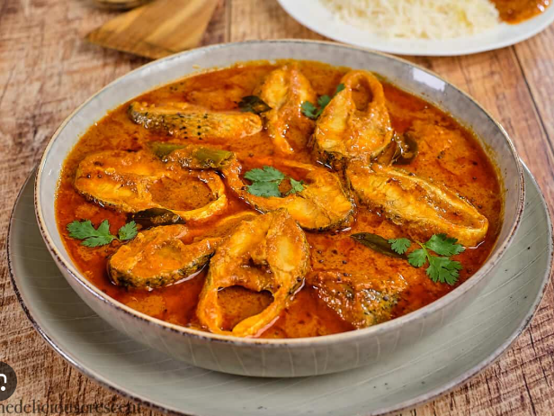

Fish Curry
Fish Curry is a flavorful coastal dish prepared with fresh fish
simmered in a spicy tomato-onion gravy enriched with aromatic
Indian spices. It is a perfect accompaniment to steamed rice
or soft chapatis.
Ingredients
- 500g fish pieces (Rohu, Seer Fish, or King Fish)
- 2 onions, finely chopped
- 2 tomatoes, pureed
- 1 tbsp ginger-garlic paste
- 2 tbsp oil
- 1 tsp mustard seeds
- 8–10 curry leaves
- ½ tsp turmeric powder
- 1½ tsp red chili powder
- 1 tsp coriander powder
- ½ tsp cumin powder
- ½ tsp garam masala
- 1 tbsp tamarind pulp
- Salt to taste
- Fresh coriander leaves for garnish
Instructions
- Heat oil in a pan and add mustard seeds and curry leaves.
- Add chopped onions and sauté until golden brown.
- Stir in ginger-garlic paste and cook for 1 minute.
- Add tomato puree and cook until the oil separates.
- Mix in turmeric, chili powder, coriander powder, cumin powder, and salt.
- Add tamarind pulp and 1 cup of water, then bring to a gentle boil.
- Carefully place the fish pieces into the curry.
- Cover and cook on low heat for 10–12 minutes until the fish is tender.
- Sprinkle garam masala and garnish with fresh coriander leaves.
- Serve hot with steamed rice.
Cooking Time
Preparation: 15 minutes
Cooking: 25 minutes
Total Time: 40 minutes
Serving Suggestion
Fish Curry tastes best with hot steamed rice, jeera rice,
chapati, or appam. Pair it with sliced onions and a wedge of
lemon for an authentic coastal meal.
← Back to Home